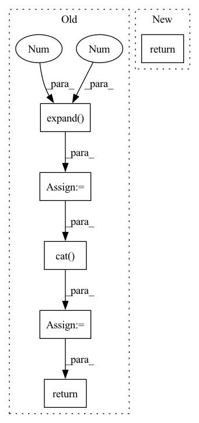

Pattern ID :38508

Before Change
// append cls token
cls_token = self.cls_token + self.pos_embed[:, :1, :]
cls_tokens = cls_token.expand(x_masked.shape[0], -1, -1)
x = torch.cat((cls_tokens, x_masked), dim=1)
// apply Transformer blocks
for blk in self.blocks:
x = blk(x)
x = self.norm(x)
// compress for communication
x = self.compressor(x)
return x, mask, ids_restore
def forward_decoder(self, x):
After Change
// x_send = torch.cat((x[:,:1,:], x_masked), dim=1) // put [CLS] token back
x_send = self.compressor(x_masked)
return x_send, mask, ids_restore
def forward_decoder(self, x):
In pattern: SUPERPATTERN
Frequency: 3
Non-data size: 6
Instances
Fragment ID: 110049551
Project Name: coperception/star
Commit Name: 731f6b1da07455be85cd59f6a8f6e795d902aa7a
Time: 2022-06-04
Author: 954742885@qq.com
File Name: coperception/models/transformers/multiagent_mae.py
M Class Name: AmortizedFusionMMAEViT
N Class Name: AmortizedFusionMMAEViT
M Method Name: forward_encoder(4)
N Method Name: forward_encoder(4)
M Parent Class: MultiAgentMaskedAutoencoderViT
N Parent Class: MultiAgentMaskedAutoencoderViT
M File Name: coperception/models/transformers/multiagent_mae.py
N File Name: coperception/models/transformers/multiagent_mae.py
M Start Line: 564
M End Line: 589
N Start Line: 577
N End Line: 611
'>
Before Change
def _integrate_with_utt_embed(self, hs, utt_embeddings):
// concat hidden states with spk embeds and then apply projection
embeddings_expanded = F.normalize(utt_embeddings).unsqueeze(1).expand(-1, hs.size(1), -1)
hs = self.hs_emb_projection(torch.cat([hs, embeddings_expanded], dim=-1))
return hs
After Change
return xs, masks
def _integrate_with_utt_embed(self, hs, utt_embeddings):
return self.hs_emb_projection(x=hs, speaker_embedding=utt_embeddings)
'>
Fragment ID: 110049548
Project Name: digitalphonetics/ims-toucan
Commit Name: 1b74e15ccae20160a402d1a627694cb85d3c060e
Time: 2022-10-27
Author: florian.lux@ims.uni-stuttgart.de
File Name: Layers/Conformer.py
M Class Name: Conformer
N Class Name: Conformer
M Method Name: _integrate_with_utt_embed(3)
N Method Name: _integrate_with_utt_embed(3)
M Parent Class: torch.nn.Module
N Parent Class: torch.nn.Module
M File Name: Layers/Conformer.py
N File Name: Layers/Conformer.py
M Start Line: 132
M End Line: 134
N Start Line: 131
N End Line: 131
'>
Before Change
// project embedding into smaller space
speaker_embeddings_projected = self.embedding_bottleneck(utt_embeddings)
// concat hidden states with spk embeds and then apply projection
speaker_embeddings_expanded = F.normalize(speaker_embeddings_projected).unsqueeze(1).expand(-1, hs.size(1), -1)
hs = self.hs_emb_projection(torch.cat([hs, speaker_embeddings_expanded], dim=-1))
return hs
def _integrate_with_utt_embed_decoder(self, hs, utt_embeddings):
hs = self.hs_emb_projection(x=hs, speaker_embedding=utt_embeddings)
After Change
def _integrate_with_utt_embed_encoder(self, hs, utt_embeddings):
expanded_embeddings = self.embedding_expansion(utt_embeddings)
return hs + expanded_embeddings
def _integrate_with_utt_embed_decoder(self, hs, utt_embeddings):
hs = self.hs_emb_projection(x=hs, speaker_embedding=utt_embeddings.detach())
'>
Fragment ID: 110049544
Project Name: digitalphonetics/ims-toucan
Commit Name: 3949187cd4e2e25ffc60f80f5ba247b6894f5da1
Time: 2022-06-30
Author: florian.lux@ims.uni-stuttgart.de
File Name: Layers/Conformer.py
M Class Name: Conformer
N Class Name: Conformer
M Method Name: _integrate_with_utt_embed_encoder(3)
N Method Name: _integrate_with_utt_embed_encoder(3)
M Parent Class: torch.nn.Module
N Parent Class: torch.nn.Module
M File Name: Layers/Conformer.py
N File Name: Layers/Conformer.py
M Start Line: 139
M End Line: 143
N Start Line: 135
N End Line: 136